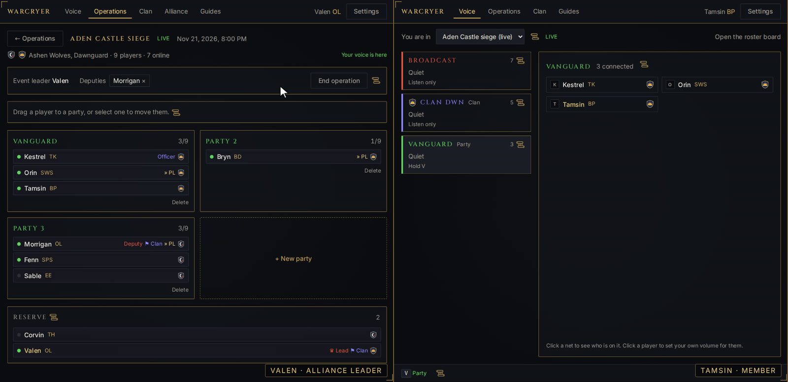
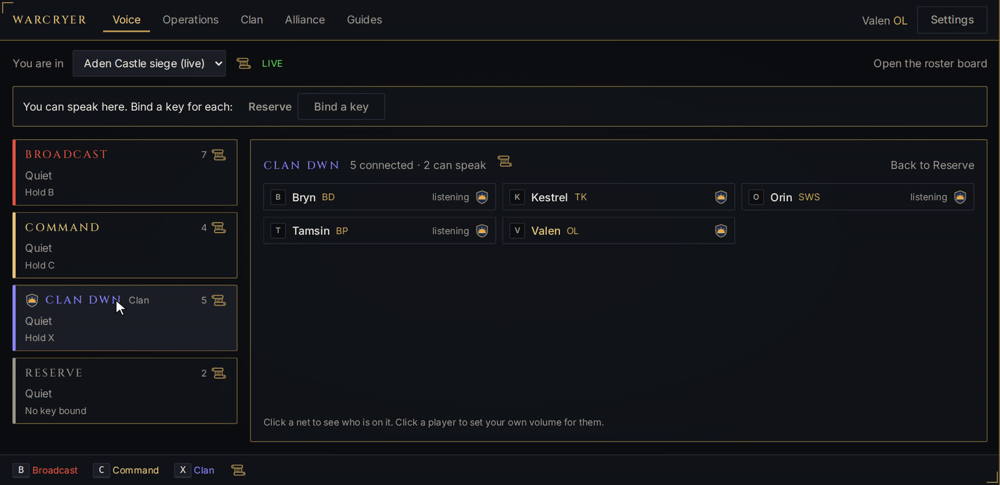

Operations
Create a siege or raid, choose the clans taking part, build parties on a drag-and-drop board, then go live. Everyone on the roster is pulled into their nets at once.

Voice that follows the chain of command.
Push-to-talk voice for large gaming alliances. The event roster decides who hears whom, so nobody picks a channel and nobody talks over the call.
Free and open source. Windows 10 and 11. Early test builds, not yet code-signed.

During an event every player is on several voice nets at once. Each net you may speak on has its own push-to-talk key, and you only ever hear the nets your place on the roster gives you.
Event leader and deputies speak
The call everyone hears. Used for the orders that move the whole alliance.
Leaders only
Event leader, deputies, clan leaders and party leaders plan here without the rank and file hearing it.
Clan leader and officers speak
Each clan's own orders, heard by that clan alone.
Everyone in the party speaks
Where the fighting is called. Push-to-talk or voice activation, your choice.
Players waiting for a party
Latecomers wait here with the organisers until they are placed.
While someone speaks on a higher net, the nets below it drop to a murmur and come back when the call ends. A Broadcast order is heard over party chatter without silencing it, and the lowered nets say so on screen.
Push-to-talk keys, including mouse side buttons, work while the game has focus. They are never taken away from the game, and no administrator rights are needed.

No bouncing between a website, a spreadsheet and a voice app. Each screen offers only what your role allows, and the server checks every action again.
Create a siege or raid, choose the clans taking part, build parties on a drag-and-drop board, then go live. Everyone on the roster is pulled into their nets at once.
Players ask to join; leaders and officers approve. A clan leader can upload a crest, which appears beside each member's name when they speak.
Between events each clan has a lounge to sit and talk in. When an operation ends, everyone is returned there automatically.
Move a player mid-fight and their audio follows. Send someone to Reserve, hand over a party, appoint a deputy: voice rights change with the role.

The Windows app is MIT licensed. Every release is built from the public repository by GitHub Actions and installed and tested on a clean Windows machine before it is published.
Sign-in happens in your own browser. The app asks Discord only who you are: no email address, no server list, no messages. It never sees your password.
Voice is relayed live and not stored. Key presses are not logged or sent; only the keys you bind are acted on. No telemetry, no ads.
Warcryer is in early testing with one alliance. The Windows client is open source and its test builds are public. Hosting for other alliances is not available yet.